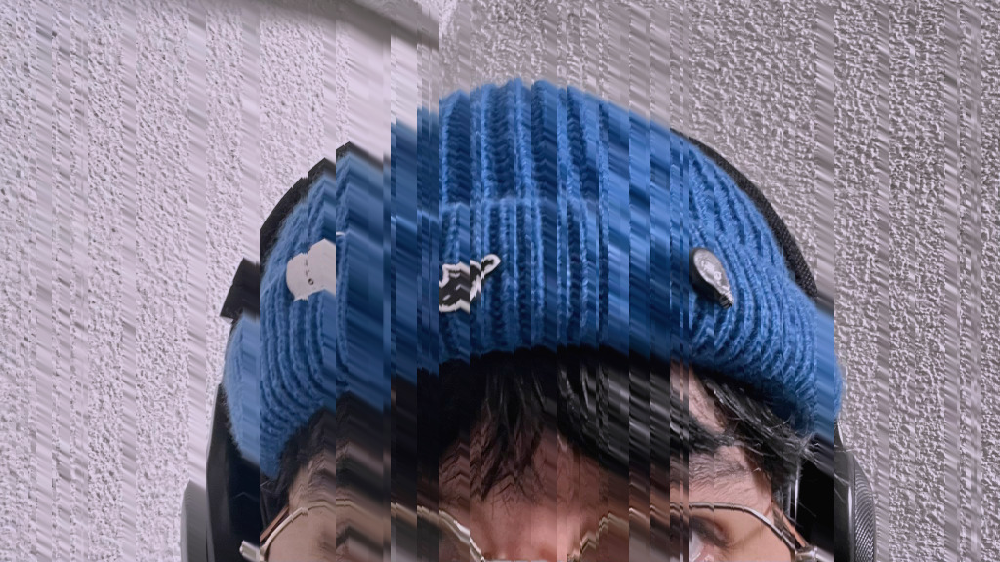

Soy estudiante de la licenciatura en Diseño, Arte y Tecnología. A través del arte, expreso mis emociones y pensamientos. Estoy fascinada por lo raro y lo oculto, disfruto experimentar en 3D, ilustración, y programación creativa en Hydra y TouchDesigner. Mi estilo único conecta mis obras, incluso con temas diversos. Me encanta salir de mi zona de confort, creo que me ayuda a crecer como artista.
Visuales hechas con live coding en Hydra Synth
Instancias en 3D, gráficos 3D y filtros pixel hechos todos en el programa TouchDesigner